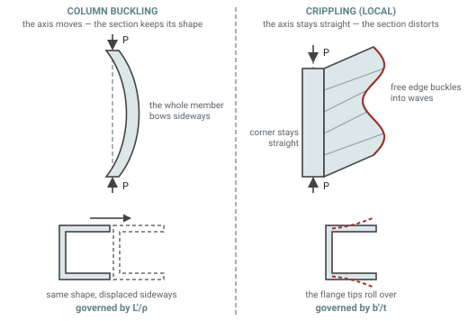
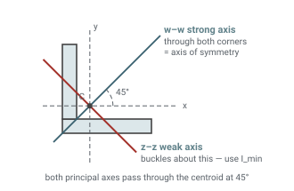
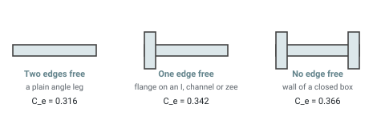
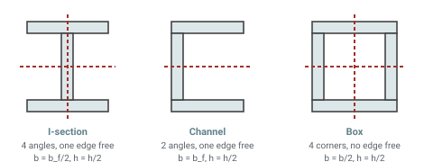
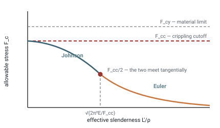
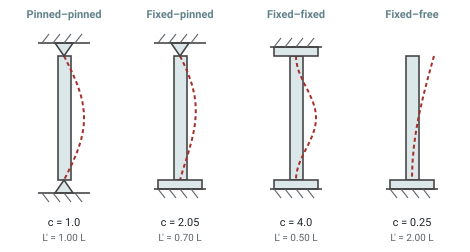

Euler and short-column allowables with a crippling cutoff, following Section 2 of the Air Force Flight Dynamics Laboratory Stress Analysis Manual (AFFDL-TR-69-42). Pick a cross-section and a material and the page works the section properties, the local crippling stress and the column curve, and shows which of the two governs.
Show detailed calculation steps
The Two Ways a Column Fails
A compression member has two failure modes and a real design has to clear both. Column buckling is the member bowing as a whole, its cross-section keeping its shape. Crippling is the thin elements of that cross-section buckling locally — a flange rolling over, a web dimpling — while the member as a whole stays straight.
Which one arrives first depends on how slender the member is and how thin its walls are. They are not independent: once a section has crippled it cannot carry more, so the crippling stress sets the ceiling that the column curve is allowed to reach. That coupling is the whole point of this page.

Column buckling versus local cripplingSection Properties and the Weak Axis
Buckling happens about whichever axis is weakest, so the section property that matters is the minimum second moment of area and the radius of gyration that follows from it.
For a symmetric shape the weak axis is a drawing axis and there is nothing to think about. For an angle or a zee it is not: the product of inertia is non-zero and the true weak axis is rotated. This page finds the principal axes rather than assuming them.

Principal axes of an equal-leg angleSection properties here come from a rectangle decomposition of the shape, so area, centroid and second moments are exact for the thin-walled idealisation rather than approximated with a formula per shape.
Crippling of Thin Sections
The manual's method is to break a built-up section into angles, find the crippling stress of each, and area-weight them. Everything on this page except the round tube and the solid bars is handled this way.
The coefficient Ce is set by how the element's edges are held. An unsupported edge is free to roll, so the fewer free edges the element has the more it carries.

Edge restraint and the crippling coefficient| Edge condition | Ce | Where it applies |
|---|---|---|
| Two edges free | 0.316 | Plain angle |
| One edge free | 0.342 | Flange outstand of an I-section, channel or zee |
| No edge free | 0.366 | Wall of a closed box or rectangular tube |

How each shape is divided for crippling| Shape | Elements | Legs b, h | Ce |
|---|---|---|---|
| Angle | 1 | b, h | 0.316 |
| Channel | 2 | bf, h/2 | 0.342 |
| Zee | 2 | bf, h/2 | 0.342 |
| I-section | 4 | bf/2, h/2 | 0.342 |
| Rectangular tube | 4 | b/2, h/2 | 0.366 |
| Solid bar or round | — | — | no local buckling; plateau is Fcy |
Round Tubes Are Their Own Case
A tube has no flanges to roll over, so the angle method does not apply. Its wall buckles as a cylinder instead.
The coefficient C falls as the wall gets thinner relative to the radius, along the curve the manual prints as Figure 2-67. It is digitized here and interpolated, and the same cap at Fcy applies.
The Column Curve
Above a transition slenderness the member fails elastically and Euler governs. Below it the material has already yielded locally, and a parabola tangent to the Euler curve is used instead.
Both branches give Fcc/2 at the transition and share a slope there, so the allowable is continuous across the changeover.

How the column-curve branches fit togetherEnd Fixity
The coefficient c describes how much the ends are held, and enters through the effective length L′ = L/√c. Fixing both ends halves the effective length; a cantilever doubles it.

End fixity and the effective length| End condition | c | L′/L | Effect |
|---|---|---|---|
| Pinned – pinned | 1.0 | 1.00 | The reference case |
| Fixed – pinned | 2.05 | 0.70 | About twice the load of pinned–pinned |
| Fixed – fixed | 4.0 | 0.50 | Four times, in theory |
| Fixed – free | 0.25 | 2.00 | A quarter — the worst case |
What This Page Computes
Three checks, reported side by side, with the lowest governing:
- Column allowable — the governing answer. Fc·A using whichever branch applies at this slenderness.
- Crippling — Fcc·A, the local capacity with no column effect at all. This is the ceiling; a very short member is limited by it.
- Euler — π²EI/L′² on its own. Above the transition it equals the column allowable; below it, it reads high and is shown only for comparison.
Material properties are read from the same MIL-HDBK-5 dataset behind Material Property Lookup. Only conditions publishing both Fcy and E are offered, since the method cannot run without them. Tick Full MIL-HDBK-5 database for the whole set, with grain direction and a service temperature that derates both properties off the effect-of-temperature curves.
Limitations
Concentric load, straight member. No eccentricity, no initial bow and no lateral load. A column with an offset load needs the secant formula or an interaction check.
Uniform thickness. The crippling decomposition assumes one thickness through the section, which is what formed sheet and most extrusions have. A section with a heavy flange and a light web needs its elements treated with their own b/t.
Johnson rather than tangent modulus. The manual also gives the tangent-modulus and Ramberg–Osgood treatments, which track test data more closely for materials with a rounded stress-strain knee. The parabola is the conservative, widely used approximation, not the last word.
No joint or end-detail check. Fastener bearing, tension clips and local crushing of a tube end are outside the scope of this page, and any of them can govern before the column does.